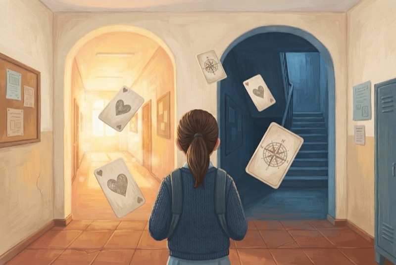
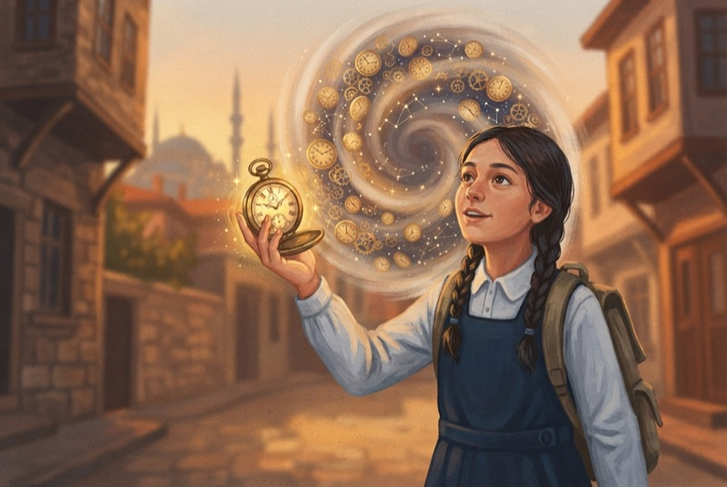
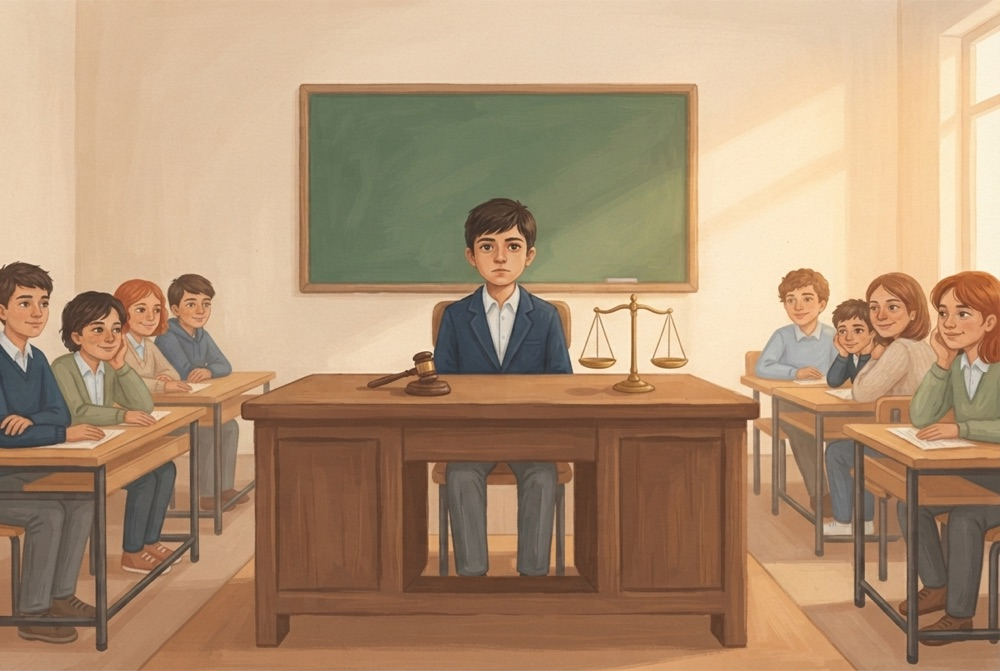

Vicdan
Kartları kaydır, kararını ver. Vicdanın, arkadaşların, ailen ve özgüvenin dengede kalsın.
Dürüstlük
Kul Hakkı
Adalet
Sabır
Cömertlik

Zaman Yolcusu
Bir seçim yap, 5 yıl sonrasına git, sonucunu kendi gözünle gör.
Seçimler ve Sonuçları

Vicdan Mahkemesi
Kürsü senin. İfadeleri dinle, delilleri incele, adil hükmü ver.
Hüsn-ü Zan
Adalet